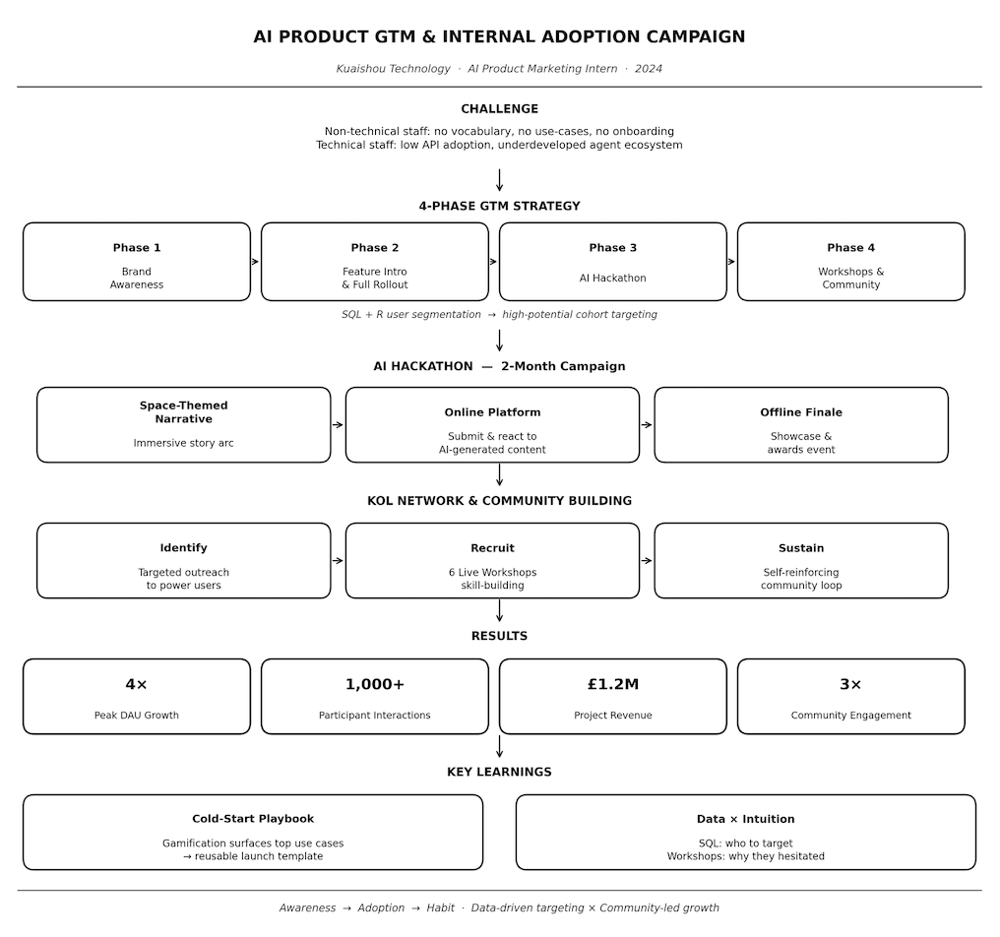

Kuaishou · Strategy, community, event, data

Context
Kuaishou is one of China's leading short-video platforms. In June 2024, the company launched an internal AI productivity suite aimed at accelerating company-wide AI transformation — moving AI capabilities from R&D into everyday business operations across departments. I joined as an AI Product Marketing Intern within the Efficiency Engineering team, working alongside product, R&D, and community leads.
Challenge
For non-technical employees — operations, admin, product, content review — the barrier was conceptual: no vocabulary, no use-case guidance, no confidence to integrate AI into existing workflows. For developers, API call volume remained low and the agent ecosystem was underdeveloped, despite the tools' extensibility. The opportunity was to reach both cohorts simultaneously through a single campaign architecture.
Architecture — 4-Phase GTM
Campaign structure
What I Did
GTM strategy — Designed the 4-phase adoption framework; used SQL and R to segment user behaviour and prioritise high-potential cohorts for targeting.
AI HackathonConceived and led a 2-month campaign built around an internal AI Hackathon — including a space-themed narrative, a custom online interactive platform for real-time agent submission and peer reaction, and an offline finale coordinated with the PM and R&D team.
KOL & communityIdentified and recruited core power users through targeted outreach, then ran 6 live workshops to build skills and sustain engagement — creating a self-reinforcing community that continued beyond the campaign.
Results
What I Learned
Gamification works not just for engagement but as a diagnostic tool — the Hackathon surfaced which use cases resonated most, directly informing Phase 3 targeting decisions. I documented this into a reusable cold-start playbook the team applied to subsequent product launches. SQL segmentation told me who to target; the KOL workshop sessions told me why they were hesitant. The combination proved more powerful than either alone.